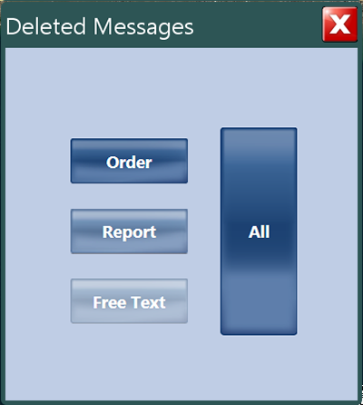
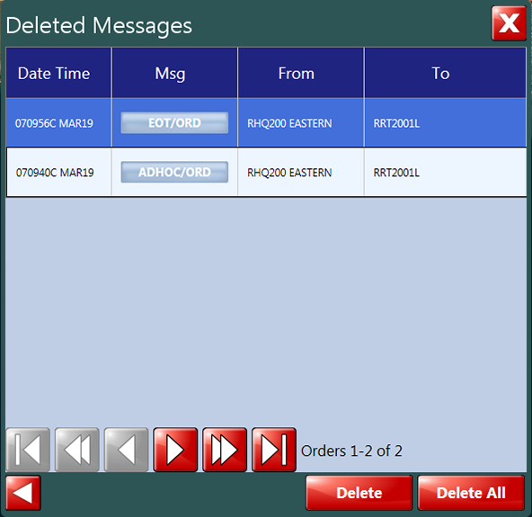
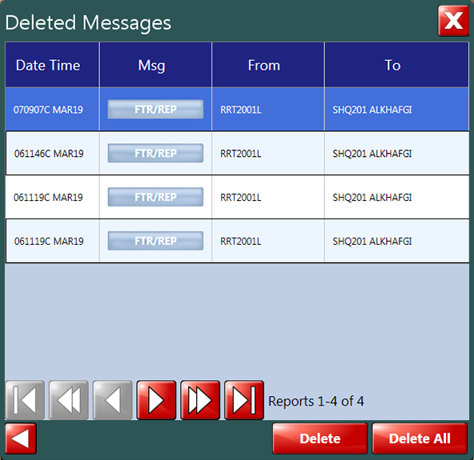
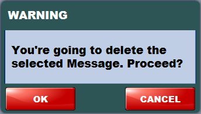
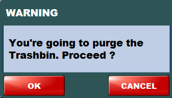

- Orders
- Reports
- Free text messages
To access the full list of deleted messages, carry out the following procedure.
| Responsibility | Field Unit Operator |
| Prerequisites | N/A |
-
From the menu, press the button. The [DELETED MESSAGES] window is displayed.
Figure: Deleted messages window  -
Press:
-
the [ORDER] button to list the deleted messages related to the task orders received from the HeadQuarter.
The following [DELETED MESSAGES] dialog box is displayed.
Figure: Deleted orders window  -
the [REPORT] button to list the deleted messages related to the FTRs.
The following [DELETED MESSAGES] dialog box is displayed.
Figure: Deleted reports window  -
the [FREE TEXT] button to list the deleted free text messages.
The following [DELETED MESSAGES] dialog box is displayed.
Figure: Deleted free text window 
the [ALL] button to display the full list of the deleted messages.
For each message, the [DELETED MESSAGES] dialog box displays:- The date and time (DTG TIME)
- The message type (MSG)
- The recipient(s) (TO)
Use the navigation bar (left and right arrows in the lower part of the window) to scroll through the list of deleted messages:-
To delete a message:
-
Select the corresponding row, then press the [DELETE] button. A confirmation dialog box is displayed.
Figure: Delete warning Press [OK] to confirm.
To delete all the messages:-
Press the [DELETE ALL] button. A confirmation dialog box is displayed.
Figure: Empty trashbin Press [OK] to confirm.
-
-